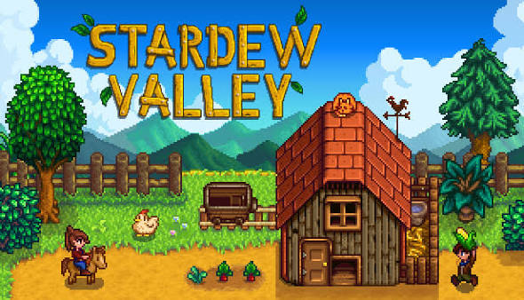
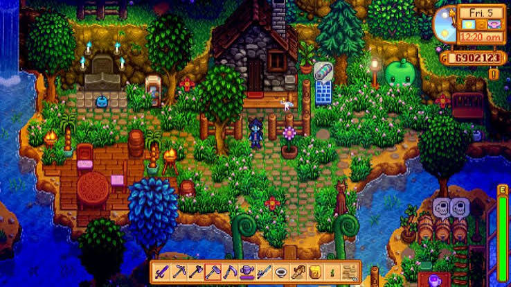
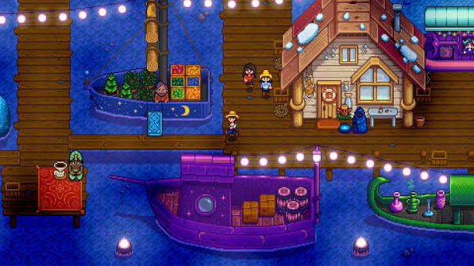

STARDEW VALLEY
Uma pequena fazenda, uma nova vida e muitas histórias.
Quando recomeçar também é uma história.
Stardew Valley começa quando o jogador deixa para trás uma rotina cansativa e recebe a oportunidade de cuidar da antiga fazenda de seu avô. A partir daí, começa uma nova vida em uma pequena comunidade, cercada por pessoas, lugares e histórias.

Uma rotina feita de pequenas escolhas.
Plantar, cuidar da fazenda, explorar, pescar, conversar com moradores ou simplesmente passar um tempo observando o mundo. Stardew Valley transforma pequenas atividades em parte de uma rotina que o jogador constrói aos poucos.


As pessoas também fazem parte da jornada.
A comunidade de Stardew Valley é formada por personagens com diferentes personalidades, histórias e problemas. Conhecer essas pessoas e acompanhar suas histórias faz com que a experiência vá além da fazenda.
O valor das pequenas conquistas.
Stardew Valley pode fazer o jogador perceber que nem todo progresso precisa acontecer rapidamente. Plantar algo, terminar uma tarefa ou construir uma relação são pequenas ações que, juntas, formam uma experiência maior.
Nem todo progresso precisa ser rápido.
A experiência de cada pessoa com um jogo é diferente. Stardew Valley pode ser uma forma de diversão, exploração ou simplesmente uma maneira de desacelerar por alguns momentos.
O importante é perceber como essa experiência se encaixa na vida fora da tela e lembrar que pequenas conquistas também podem ter significado.